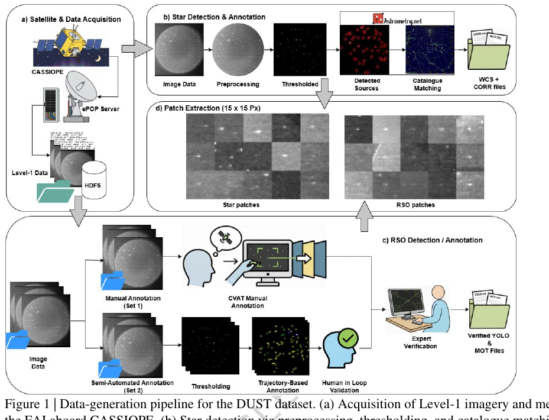
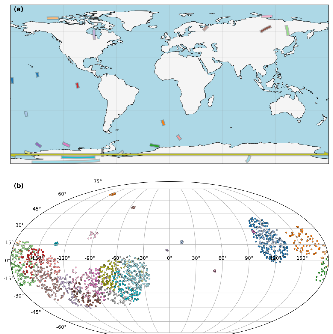
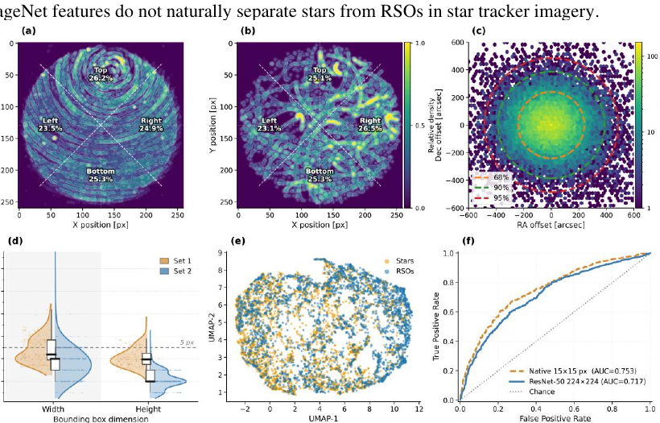
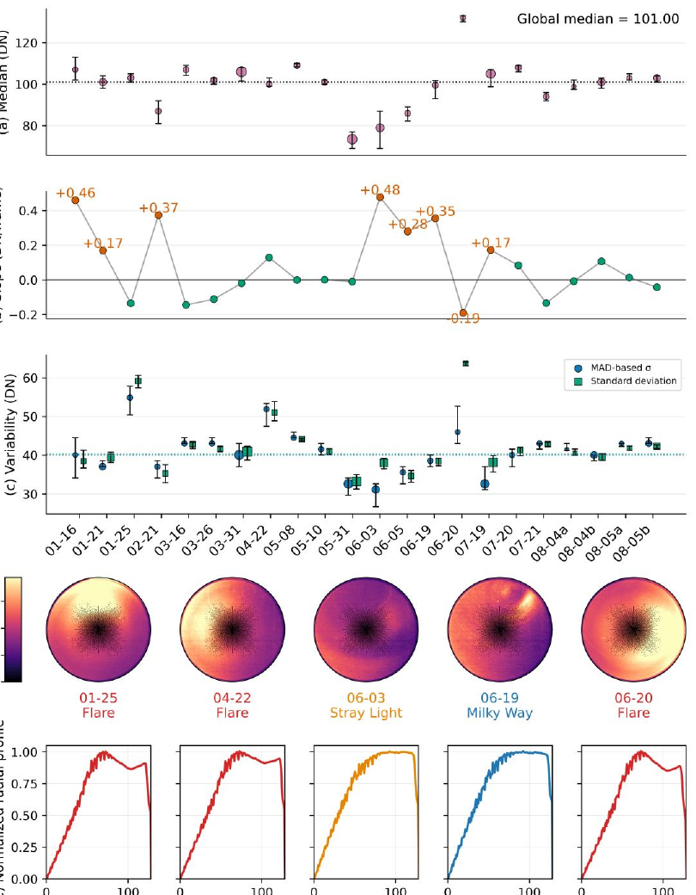

Abstract
On-orbit benchmark for SSA and navigation
Space situational awareness increasingly relies on optical observations to detect and track resident space objects and estimate spacecraft attitude. DUST addresses the shortage of public, real, on-orbit, wide-field star-tracker-class datasets by providing near-infrared imagery from the Fast Auroral Imager aboard CASSIOPE. The dataset includes astrometrically calibrated stars, manually verified RSO annotations, spacecraft ephemeris and attitude, and image-quality metrics. It supports algorithm development for RSO detection in dense star fields, multi-object tracking under orbital motion, and attitude estimation from star-tracker-class imagery.
Dataset
Dataset Highlights
1,378
Near-infrared image frames
4,237
Verified RSO instances
160
Distinct RSO transits
22
Observation sessions
35,877
Detected stellar instances
26° FOV
FAI near-infrared wide-field imaging
Pipeline
Data Generation Pipeline

The workflow retrieves Level-1 FAI imagery and metadata, performs star detection and astrometric calibration, annotates RSOs through manual and semi-automated workflows, and extracts star/RSO patches for validation.
Visual Overview
Figures and Validation Products

Observation ground tracks and plate-solved stellar sky coverage across the 22 DUST sessions.

Stacked observations show star trails in white and RSO annotations in yellow across diverse backgrounds and geometries.

Validation plots summarize spatial priors, astrometric residuals, bounding-box statistics, feature embeddings, and ROC curves.

Session-level background statistics and polar illumination maps characterize flare, stray light, and Milky Way contamination.
Benchmark
Supported Tasks and Technical Validation
Supported Tasks
- RSO detection in dense stellar fields
- Multi-object tracking across consecutive frames
- Star identification and attitude estimation
- Small-object and low-contrast detection studies
- Background robustness and domain-shift analysis
Why It Is Challenging
- RSOs are often only a few pixels wide.
- Stars and RSOs appear nearly point-like in individual frames.
- Motion is curved because of spacecraft attitude dynamics.
- Frames include realistic flare, gradients, and stray-light artifacts.
Validation Summary
| Metric | Reported value | Interpretation |
|---|---|---|
| Plate-solving success | 84% overall; median 92% | Most sessions are reliably astrometrically calibrated. |
| Astrometric residuals | 68% within 240.5 arcsec; 95% within 485.4 arcsec | Sub-pixel accuracy at the FAI scale. |
| Track completeness | 98.4% average | RSO labels are temporally coherent across frames. |
| Tiny-object regime | ~76.8% of RSOs have width ≤5 px and height ≤5 px | The benchmark targets extreme small-object detection. |
| Native feature separability | ROC-AUC 0.753 | Single-frame static features provide only weak separation. |
Files
Data Records
The dataset is distributed in open formats including PNG, CSV, TXT, FITS, and HDF5-derived metadata products. Session folders include image frames, star correspondence files, WCS solutions, background statistics, YOLO labels, MOT tracking labels, and thresholded images.
DUST/
├── SET_1/ # manual annotation sessions
│ └── YYYY_MM_DD/
│ ├── Background/
│ ├── Corr/
│ ├── H5/
│ ├── Images/
│ ├── RSO_Annotations/
│ │ ├── MOT/
│ │ └── YOLO/
│ ├── Thresholded_Images/
│ └── WCS/
└── SET_2/ # semi-automated annotation sessions
└── same structure as SET_1BibTeX
@article{suthakar2026dust,
title = {An On-Orbit Star Tracker Benchmark for Resident Space Object Detection and Attitude Estimation},
author = {Suthakar, Vithurshan and Kunalakantha, Perushan and Lee, Regina S. K. and Sohn, Gunho},
journal = {Scientific Data},
year = {2026},
doi = {10.1038/s41597-026-07736-9},
url = {https://doi.org/10.1038/s41597-026-07736-9}
}